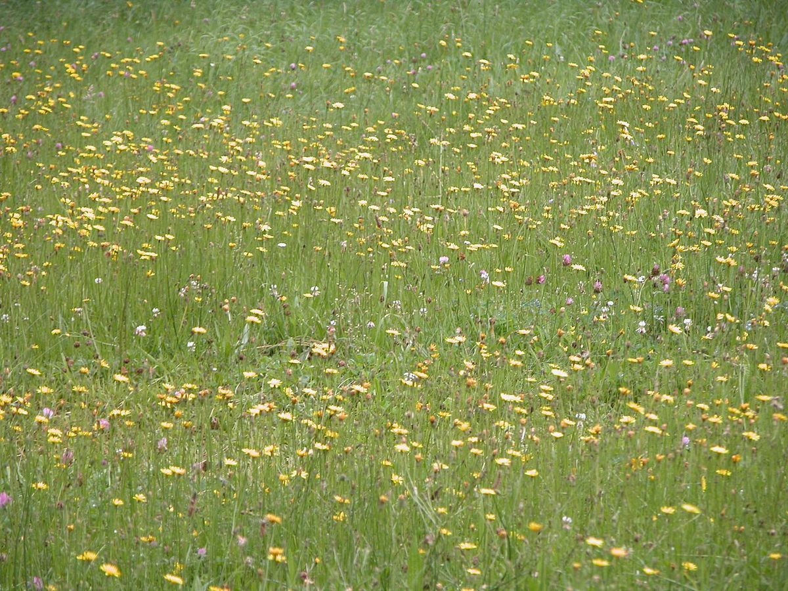
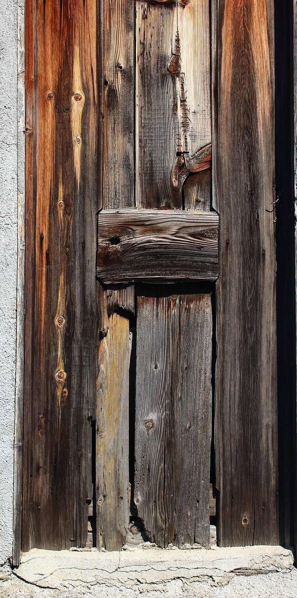

口コミ
以下は制作側が作成したイメージ例です。実際のお客様の声ではありません。
イメージ例
ページの見た目がすっきりしていて、気軽に電話で聞いてみようと思えそうです。
イメージ例
メニューが準備中でも、問い合わせ先が分かりやすいと感じられそうです。
イメージ例
Instagramとあわせて確認できるので、情報を探しやすそうです。
実際のお客様の声を掲載する場合は、店舗の許可と確認のうえ、上記のイメージ例と差し替えます。
ご連絡はこちら
お問い合わせは、お電話またはInstagramからどうぞ。


掲載写真はフリー素材のイメージです。店舗の実際の様子ではありません。他地域で撮影されたもの、撮影地が不明なものを含みます。